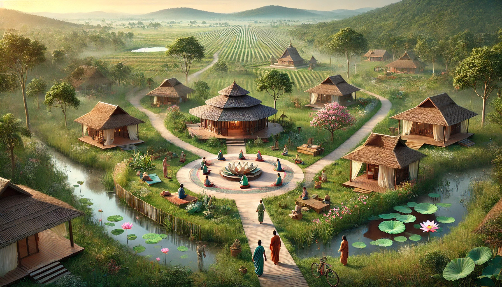

Spiritual & Eco-Tourism
Objective: Encourage spiritual immersion through meditation retreats, nature walks, and conservation programs.
Course Structure
- Temple of Nature Walks & Meditation Pathways
- Eco-Tourism & Sustainable Retreats
- Ritual Pathways & Spiritual Practices
- Conservation & Biodiversity Preservation
- Developing a Spiritual Connection with Nature
Practical Sessions
- Guided meditation & nature immersion retreats
- Conservation volunteering programs
- Ritual and energy cleansing ceremonies
